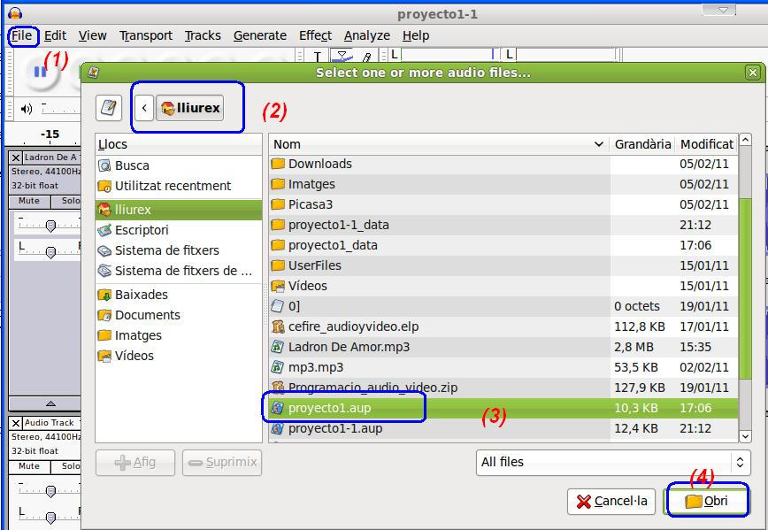
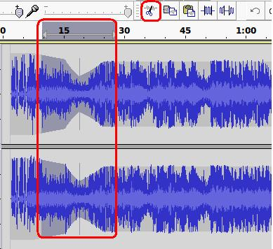
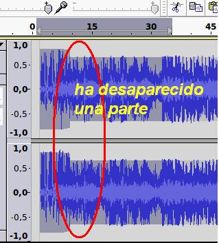
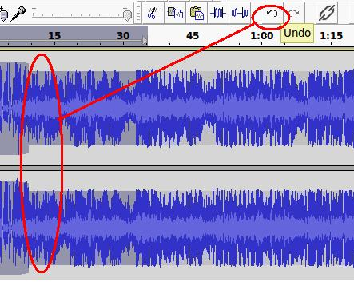
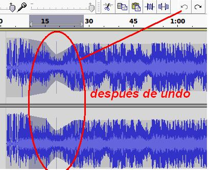
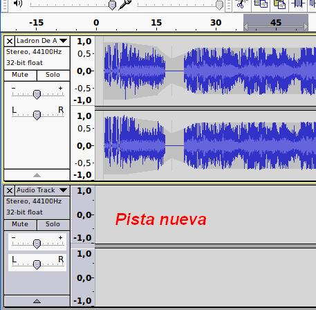
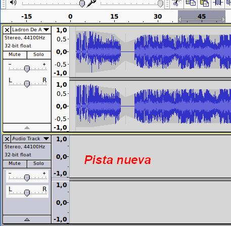
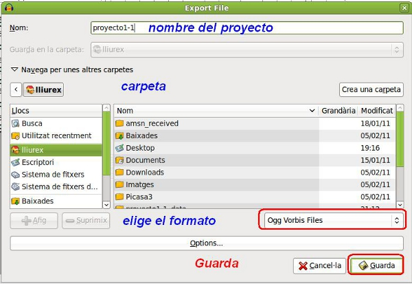

3.1. Trabajando en nuestro proyecto
1. Abrimos el proyecto1.aup que hemos trabajado en el apartado 2.1 de este tema. Entramos (1) en Fichero (file) / Abrir (open). Localizamos la carpeta en la que lo guardamos (2), seleccionamos el proyecto1.aup (3) y abrimos (4).

2. Debido a que hemos realizado una serie de modificaciones en el apartado anterior, si deseamos que aparezca la canción en toda la línea de tiempo, debemos seleccionar ajustar proyecto a la ventana (fit project).
3. Si seleccionamos una parte de la línea de tiempo y utilizamos el botón cortar, nos desaparece la zona seleccionada de la zona de tiempo.
|  |
 |
4. Para recuperar la parte cortada, utilicemos el botón rehacer.
|  |  |
5. Selecciona la parte más angosta del proyecto1. La zona que usamos por el comando envolvente. Procederemos a silenciar esa zona. Utiliza el botón silenciar y reproduce la zona seleccionada y observarás que no tiene sonido.
6. Procederemos a copiar una selección en una pista nueva. Genera una pista nueva estéreo (dos canales). Entra en Pistas (tracks) / añadir (add) / Pista estéreo.
 

6.1. Selecciona una porción del proyecto en la línea de tiempo. Utiliza el botón de copiar.
6.2. Ubícate en la zona que desees en la pista nueva y utiliza el botón pegar.
Si reproduces el proyecto observarás que en la zona de pegada se escucha el orignal y la parte pegada.
7. Elimina la pista nueva de tu proyecto. Haz clic en la X de la pista y desaparece.
8. Si utilizas la herramienta trim (recortar( observa lo que ocurre. Utiliza el botón deshacer (undo) para recuperar la versión original.
9. Guarda el nuevo proyecto como proyecto1-1.aup.
10. Exporta el contenido del proyecto a un fichero del tipo ogg. File / Export (Fichero / exportar). Indica la carpeta, el nombre del fichero y el tipo tal como muestra la imagen.

10.1 Exporta el mismo proyecto como mp3 y flac. Observa la diferencia en el tamaño.
11. Comprueba si puedes reproducir dicho fichero con un reproductor. Observa el resultado.
Jo.R.C.A. 2004 - 2011

Edición de Audio y Video con Software Libre by José Ramón Cerdeira Alonso is licensed under a Creative Commons Reconocimiento-No comercial-Compartir bajo la misma licencia 3.0 España License